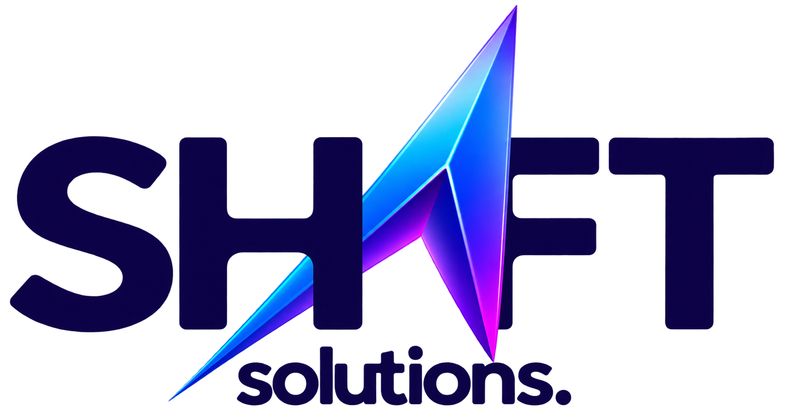

AI call agents for local businesses that need to answer faster, qualify leads better, and never miss a customer call.
Startup
Shift Solutions
My Role
Prompt Designer, Lead Researcher, Sales Outreach
Focus
Restaurants, Clinics, Real Estate
Website
Shift Solutions introduction
The Challenge
Local businesses lose a lot of revenue because they miss calls when they are busy, closed, or overwhelmed by day-to-day operations. Many business owners know they need better customer responsiveness, but they still struggle with staffing, inconsistent follow-up, and a lack of time to manage incoming inquiries.
At Shift Solutions, we set out to solve that by offering AI Agents that answer calls like a professional receptionist while helping businesses capture and qualify leads automatically.
My Contribution
My role was not only to help build the product technically, but to make sure the AI actually sounded useful, clear, and trustworthy in real business situations. I focused on the parts that connect the product to customer value: prompt design, lead qualification, and outreach.
Prompt Design
I designed prompts so the AI could respond naturally, stay on-brand, and handle common customer questions without sounding robotic or confusing.
Lead Research
I identified relevant local businesses and analyzed which ones had the clearest need for AI call handling and lead capture.
Sales Outreach
I contacted businesses directly to explain the value of the service and qualify whether they were likely to benefit from AI agents.
Designing the AI Agent Experience
We were building an AI assistant for real-world scenarios, so the experience needed to feel human but structured. That meant designing conversation flows that could handle reservations, appointments, FAQs, service inquiries, and escalation when a person needed to be contacted.
Why This Matters
Our clients are not tech companies — they are small businesses with real-world operational constraints. The value of the product had to be obvious: fewer missed calls, more answered questions, better lead capture, and a smoother customer experience without hiring more staff.
That is where my contribution mattered most. I translated business problems into clear conversation logic and helped shape the agent so it felt useful in a real local business context, not just technically impressive.
Impact
Business
Focused on industries where missed calls directly affect revenue.
UX
Designed conversations around clarity, trust, and conversion.
Growth
Combined prompt engineering with outreach to validate demand.